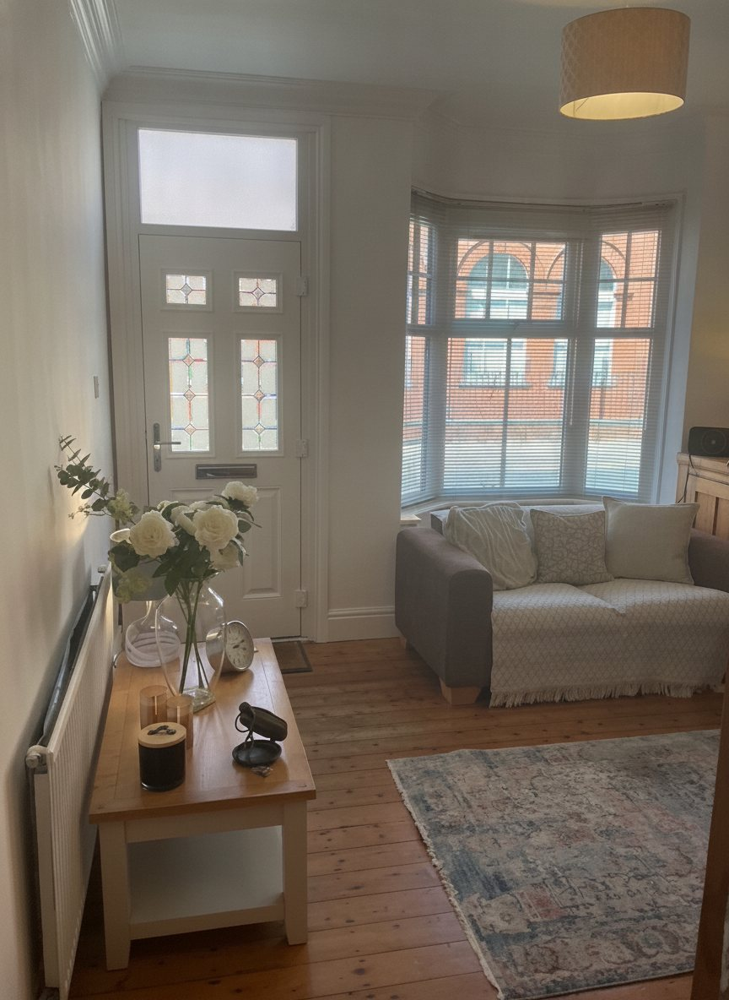

Shaun William Lewis MBACP (Snr. Accred)
Registered Counsellor and Psychotherapist, working with adults, young adults and couples.
What first drew me to psychotherapy
People often ask what first drew me to psychotherapy.
For me, it has always been a fascination with people, their stories, their relationships and the experiences that quietly shape who they become. Over the years I've come to believe that, however lost or overwhelmed we may sometimes feel, there is meaning within our experiences. When we are given the opportunity to explore them with kindness, curiosity and compassion, new understanding can begin to emerge.
For more than 19 years I have had the privilege of working therapeutically with adults, young adults and couples. Before becoming a psychotherapist I was a volunteer Samaritan for six years, and spent many years in engineering, leadership and human resources. Those experiences gave me a real appreciation of the pressures, responsibilities and complexities that many people carry into therapy today.
Adapting therapy to you, not the other way round
My work is rooted in Psychodynamic and Jungian psychotherapy, where I have a particular interest in relationships, attachment, childhood experiences, dreams and the unconscious patterns that continue to influence our lives.
Alongside this, I draw upon CBT, Person-Centred and Solution Focused approaches whenever they may be helpful, always adapting therapy to the individual rather than expecting the individual to fit a particular way of working.
My own journey in analysis
One of the greatest influences on my development has been my own personal journey. For over six years I have attended Jungian analysis twice each week, a commitment that continues today. I don't see this simply as professional development. I see it as an important part of the person I aspire to be.
“Sitting in the client's chair has continually reminded me that therapy asks for courage, trust and vulnerability.”
My journey in analysis has deepened my understanding that none of us is ever truly “finished”. We are all shaped by our relationships, our memories and the experiences that have made us who we are. I believe that by continuing to explore my own inner world, I am better able to meet others with empathy, humility and genuine understanding.
Areas I have explored most deeply
Whatever your beliefs or life experiences, I hope to offer a space where every part of you is welcome and can be explored safely, respectfully and without judgement.
Childhood Trauma
Understanding how early experiences continue to shape the present.
Personality Adaptation
The ways we have learned to survive, and what they cost us.
Neuro-Affirming Practice
Working with how your mind actually is, not how it is expected to be.
Spirituality in Therapy
The place of meaning and belief within the therapeutic relationship.
Senior Accredited with the BACP
In December 2025, I was awarded Senior Accreditation with the British Association for Counselling and Psychotherapy (MBACP Snr. Accred), aligned with the SCoPEd Framework (Column C). This recognises advanced standards of training, experience and ethical practice.
Alongside my private practice I continue to engage in regular Clinical Supervision, twice monthly, with a Jungian Analytical Psychotherapist and ongoing (CPD) professional development because I believe learning is a lifelong process.
“I believe therapy is built upon the relationship between therapist and client. Qualifications and experience matter, but feeling genuinely heard, understood and accepted is often where meaningful change begins.”
Begin to understand your own story
It would be a privilege to walk alongside you. I offer a free 30-minute consultation, by telephone or online, with no pressure and no obligation.
Book a Free Consultation